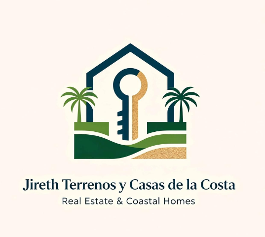
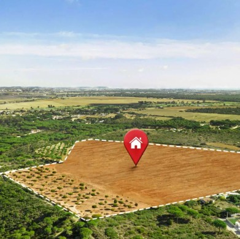
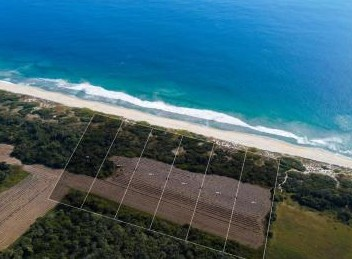
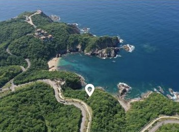
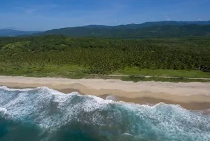
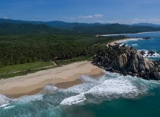

🏝️
Ubicaciones Estratégicas
Terrenos en zonas con gran crecimiento y excelente plusvalía.

Terrenos • Casas • Inversiones
Encuentra el terreno ideal para invertir, construir o comenzar una nueva historia.
Explorar TerrenosDesliza para descubrir
En Jireth Terrenos de la Costa te ayudamos a encontrar terrenos y propiedades con excelente ubicación, documentación clara y atención personalizada durante todo el proceso.
Terrenos en zonas con gran crecimiento y excelente plusvalía.
Cada propiedad cuenta con datos completos para ayudarte a tomar una decisión.
Te acompañamos antes, durante y después de tu compra.
Puerto Escondido, Huatulco, Pinotepa Nacional y más.
Te acompañamos en cada etapa para que encuentres la mejor opción de inversión de forma segura y transparente.
Revisa nuestros terrenos disponibles y encuentra el que más te guste.
Resolveremos todas tus dudas y conocerás personalmente la propiedad.
Te ayudamos a elegir la opción ideal según tus necesidades.
Te acompañamos durante el proceso hasta concretar tu inversión.
Seleccionamos propiedades con excelente ubicación, gran potencial de plusvalía y listas para convertirse en tu próxima inversión.

DisponibleSelecciona una ciudad y descubre las propiedades disponibles.




Cada marcador representa un terreno disponible dentro de nuestro catálogo. Explora las distintas zonas de la Costa de Oaxaca y descubre dónde podría estar tu próxima inversión.